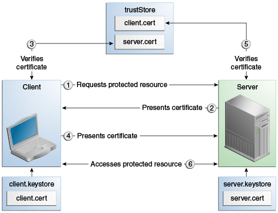
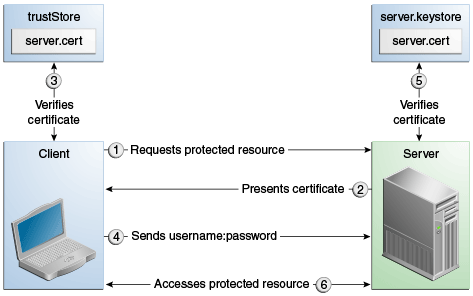

<login-config>
<auth-method>CLIENT-CERT</auth-method>
</login-config>
|
Plataforma Java, Edición Empresarial (Java EE) 8 El Tutorial de Java EE |
| Anterior | Siguiente | Contenidos |
En esta sección se analizan los mecanismos de autenticación de clientes y de autenticación mutua.
Aquí se tratan los siguientes temas:
Con la autenticación del cliente, el servidor web autentica al cliente mediante el certificado de clave pública del cliente. La autenticación del cliente es un método de autenticación más seguro que la autenticación básica o basada en formularios. Utiliza HTTP sobre SSL (HTTPS), en el que el servidor autentica al cliente utilizando el certificado de clave pública del cliente. La tecnología SSL proporciona cifrado de datos, autenticación de servidor, integridad de mensajes y autenticación de cliente opcional para una conexión TCP/IP. Puede pensar en un certificado de clave pública como el equivalente digital de un pasaporte. El certificado es emitido por una organización de confianza, una autoridad de certificación (CA), y proporciona identificación para el portador.
Antes de utilizar la autenticación de cliente, asegúrese de que el cliente tenga un certificado de clave pública válido. Para obtener más información sobre la creación y el uso de certificados de clave pública, lea Trabajar con Certificados Digitales.
El siguiente ejemplo muestra cómo declarar la autenticación del cliente en su descriptor de implementación:
<login-config>
<auth-method>CLIENT-CERT</auth-method>
</login-config>
Con la autenticación mutua, el servidor y el cliente se autentican entre sí. La autenticación mutua es de dos tipos:
Basado en certificados (ver Figura 53-1)
Basado en nombre de usuario/contraseña (ver Figura 53-2)
Cuando se utiliza la autenticación mutua basada en certificados, se producen las siguientes acciones.
Un cliente solicita acceso a un recurso protegido.
El servidor web presenta su certificado al cliente.
El cliente verifica el certificado del servidor.
Si tiene éxito, el cliente envía su certificado al servidor.
El servidor verifica las credenciales del cliente.
Si tiene éxito, el servidor otorga acceso al recurso protegido solicitado por el cliente.
La Figura 53-1 muestra lo que ocurre durante la autenticación mutua basada en certificados.

En la autenticación mutua basada en nombre de usuario/contraseña, ocurren las siguientes acciones.
Un cliente solicita acceso a un recurso protegido.
El servidor web presenta su certificado al cliente.
El cliente verifica el certificado del servidor.
Si tiene éxito, el cliente envía su nombre de usuario y contraseña al servidor.
El servidor verifica las credenciales del cliente.
Si la verificación es exitosa, el servidor otorga acceso al recurso protegido solicitado por el cliente.
La Figura 53-2 muestra lo que ocurre durante la autenticación mutua basada en nombre de usuario/contraseña.

Esta sección trata sobre la configuración de la autenticación del lado del cliente. Habilitar la autenticación del lado del servidor y del lado del cliente se denomina autenticación mutua o bidireccional. En la autenticación de clientes, los clientes deben enviar certificados emitidos por una autoridad de certificación que elija aceptar.
Hay al menos dos formas de habilitar la autenticación mutua a través de SSL.
El método preferido es establecer el método de autenticación en el descriptor de
implementación de la aplicación web.xml en CLIENT-CERT. Esto
impone la autenticación mutua modificando el descriptor de implementación de la aplicación
dada. De esta forma, la autenticación del cliente se habilita solo para un recurso
específico controlado por la restricción de seguridad y la verificación se realiza solo
cuando la aplicación requiere la autenticación del cliente.
Un método menos utilizado es establecer la propiedad clientAuth en el
dominio certificate en true si desea que la pila SSL requiera
una cadena de certificados válida del cliente antes de aceptar una conexión. Un valor
false (que es el valor predeterminado) no requerirá una cadena de
certificados a menos que el cliente solicite un recurso protegido por una restricción de
seguridad que utilice la autenticación CLIENT-CERT. Cuando habilita la
autenticación del cliente configurando la propiedad clientAuth en
true, se requerirá la autenticación del cliente para todas las solicitudes
que pasen por el puerto SSL especificado. Si activa clientAuth, estará
activado todo el tiempo, lo que puede degradar gravemente el rendimiento.
Cuando la autenticación de cliente está habilitada de estas dos formas, la autenticación de cliente se realizará dos veces.
Si tiene un certificado firmado por una autoridad de certificación (CA) de confianza, como
Verisign, y el archivo cacerts.jks del servidor GlassFish ya contiene un
certificado verificado por esa CA, no necesita completar este paso. Debe instalar su
certificado en el archivo de certificado del servidor GlassFish solo cuando su certificado
esté autofirmado.
Desde el directorio donde desea crear el certificado de cliente, ejecute keytool
como se describe aquí. Cuando presiona Intro, keytool le solicita que ingrese el
nombre del servidor, la unidad organizativa, la organización, la localidad, el estado y el
código del país.
Debe ingresar el nombre del servidor en respuesta al primer aviso de keytool, en
el que solicita el nombre y el apellido. Para fines de prueba, puede ser
localhost. Si este ejemplo es para verificar la autenticación mutua y recibe un error
de tiempo de ejecución que indica que el nombre de host HTTPS es incorrecto, vuelva a crear el
certificado de cliente, asegurándose de usar el mismo nombre de host que usará cuando ejecute el
ejemplo. Por ejemplo, si el nombre de su máquina es duke, ingrese
duke como el CN del certificado o cuando se le solicite el nombre y el apellido.
Al acceder a la aplicación, ingrese una URL que apunte a la misma ubicación (por ejemplo,
https://duke:8181/mutualauth/hello). Esto es necesario porque durante el
protocolo de enlace SSL, el servidor verifica el certificado del cliente comparando el nombre
del certificado con el nombre de host desde el que se origina.
Para crear un almacén de claves denominado client_keystore.jks que contenga un
certificado de cliente denominado client.cer, siga estos pasos.
Cree una copia de seguridad del archivo de almacén de confianza del servidor. Para hacer esto,
Cambie al directorio que contiene los archivos del almacén de claves y del almacén de confianza del servidor, domain-dir`\config`.
Copie cacerts.jks a cacerts.backup.jks.
Copie keystore.jks en keystore.backup.jks.
No coloque certificados de cliente en el archivo cacerts.jks. Cualquier
certificado que agregue al archivo cacerts puede ser una raíz confiable
para todas y cada una de las cadenas de certificados. Una vez que haya completado el
desarrollo, elimine la versión de desarrollo del archivo cacerts y
reemplácelo con la copia original.
Genere el certificado de cliente. Ingrese el siguiente comando desde el directorio donde desea generar el certificado de cliente:
java-home\bin\keytool -genkey -alias client-alias -keyalg RSA
-keypass changeit -storepass changeit -keystore client_keystore.jks
Exporte el certificado de cliente generado al archivo client.cer:
java-home\bin\keytool -export -alias client-alias -storepass changeit
-file client.cer -keystore client_keystore.jks
Agregue el certificado al archivo del almacén de confianza
domain-dir`/config/cacerts.jks`. Ejecute keytool desde el directorio donde
creó el almacén de claves y el certificado de cliente. Utilice los siguientes parámetros:
java-home\bin\keytool -import -v -trustcacerts -alias client-alias
-file client.cer -keystore domain-dir/config/cacerts.jks
-keypass changeit -storepass changeit
La utilidad keytool devuelve un mensaje como este:
Owner: CN=localhost, OU=My Company, O=Software, L=Santa Clara, ST=CA, C=US
Issuer: CN=localhost, OU=My Company, O=Software, L=Santa Clara, ST=CA, C=US
Serial number: 3e39e66a
Valid from: Tue Nov 27 12:22:47 EST 2012 until: Mon Feb 25 12:22:47 EST 2013
Certificate fingerprints:
MD5: 5A:B0:4C:88:4E:F8:EF:E9:E5:8B:53:BD:D0:AA:8E:5A
SHA1:90:00:36:5B:E0:A7:A2:BD:67:DB:EA:37:B9:61:3E:26:B3:89:46:32
Signature algorithm name: SHA1withRSA
Version: 3
Trust this certificate? [no]: yes
Certificate was added to keystore
[Storing cacerts.jks]
Reinicie el servidor GlassFish.
| Anterior | Siguiente | Contenidos |